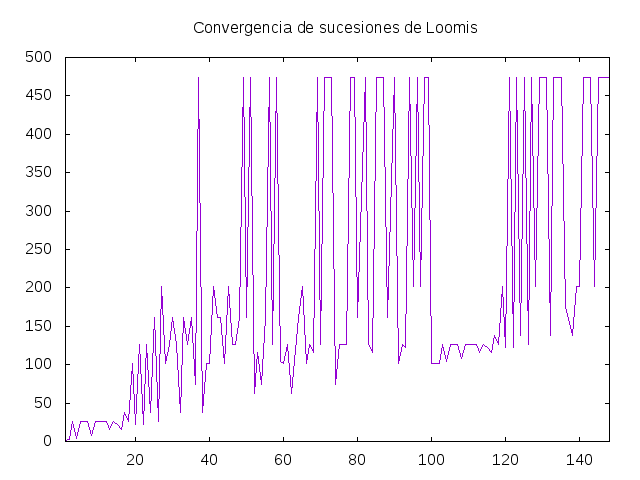
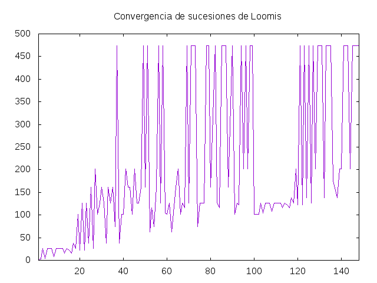

Operaciones con series de potencias
Una serie de potencias es una serie de la forma
a₀ + a₁x + a₂x² + a₃x³ + ...
Las series de potencias se pueden representar mediante listas infinitas. Por ejemplo, la serie de la función exponencial es
e^x = 1 + x + x²/2! + x³/3! + ...
y se puede representar por [1, 1, 1/2, 1/6, 1/24, 1/120, ...]
Las operaciones con series se pueden ver como una generalización de las de los polinomios.
En lo que sigue, usaremos el tipo (Serie a) para representar las series de potencias con coeficientes en a y su definición es
type Serie a = [a]
Definir las siguientes funciones
opuesta :: Num a => Serie a -> Serie a suma :: Num a => Serie a -> Serie a -> Serie a resta :: Num a => Serie a -> Serie a -> Serie a producto :: Num a => Serie a -> Serie a -> Serie a cociente :: Fractional a => Serie a -> Serie a -> Serie a derivada :: (Num a, Enum a) => Serie a -> Serie a integral :: (Fractional a, Enum a) => Serie a -> Serie a expx :: Serie Rational
tales que
- (opuesta xs) es la opuesta de la serie xs. Por ejemplo,
λ> take 7 (opuesta [-6,-4..]) [6,4,2,0,-2,-4,-6]
- (suma xs ys) es la suma de las series xs e ys. Por ejemplo,
λ> take 7 (suma [1,3..] [2,4..]) [3,7,11,15,19,23,27]
- (resta xs ys) es la resta de las series xs es ys. Por ejemplo,
λ> take 7 (resta [3,5..] [2,4..]) [1,1,1,1,1,1,1] λ> take 7 (resta ([3,7,11,15,19,23,27] ++ repeat 0) [1,3..]) [2,4,6,8,10,12,14]
- (producto xs ys) es el producto de las series xs e ys. Por ejemplo,
λ> take 7 (producto [3,5..] [2,4..]) [6,22,52,100,170,266,392]
- (cociente xs ys) es el cociente de las series xs e ys. Por ejemplo,
λ> take 7 (cociente ([6,22,52,100,170,266,392] ++ repeat 0) [3,5..]) [2.0,4.0,6.0,8.0,10.0,12.0,14.0]
- (derivada xs) es la derivada de la serie xs. Por ejemplo,
λ> take 7 (derivada [2,4..]) [4,12,24,40,60,84,112]
- (integral xs) es la integral de la serie xs. Por ejemplo,
λ> take 7 (integral ([4,12,24,40,60,84,112] ++ repeat 0)) [0.0,4.0,6.0,8.0,10.0,12.0,14.0]
- expx es la serie de la función exponencial. Por ejemplo,
λ> take 8 expx [1 % 1,1 % 1,1 % 2,1 % 6,1 % 24,1 % 120,1 % 720,1 % 5040] λ> take 8 (derivada expx) [1 % 1,1 % 1,1 % 2,1 % 6,1 % 24,1 % 120,1 % 720,1 % 5040] λ> take 8 (integral expx) [0 % 1,1 % 1,1 % 2,1 % 6,1 % 24,1 % 120,1 % 720,1 % 5040]
 y graficaConvergencia ([1..148] \ [63,81,89,137]) dibuja

y graficaConvergencia ([1..148] \ [63,81,89,137]) dibuja



 (grafica [10..100]) dibuja
(grafica [10..100]) dibuja
 y (grafica [100..200]) dibuja
y (grafica [100..200]) dibuja

 y se obtiene a partir de la serie armónica
y se obtiene a partir de la serie armónica
 modificando sólo el signo de algunos términos según el siguiente criterio:
modificando sólo el signo de algunos términos según el siguiente criterio:


 donde la línea morada corresponde a la aproximación de Gregory-Leibniz y la verde a la de Beeler.
donde la línea morada corresponde a la aproximación de Gregory-Leibniz y la verde a la de Beeler.